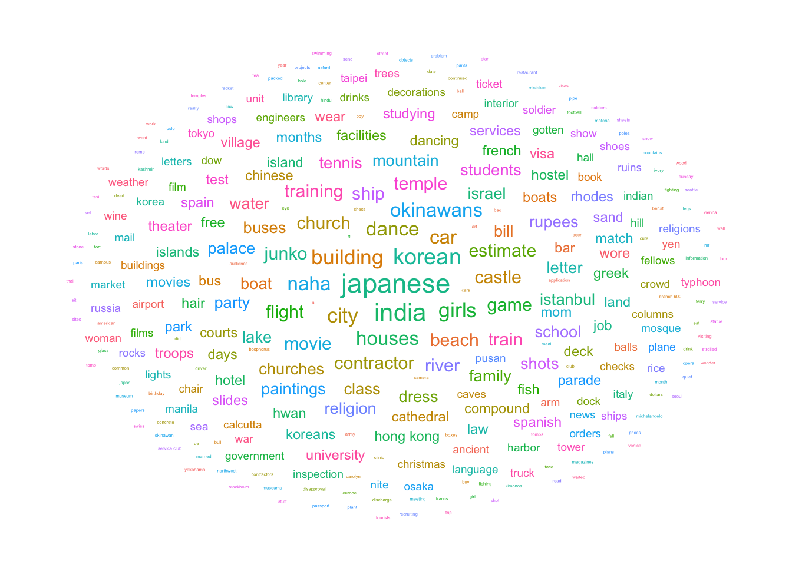
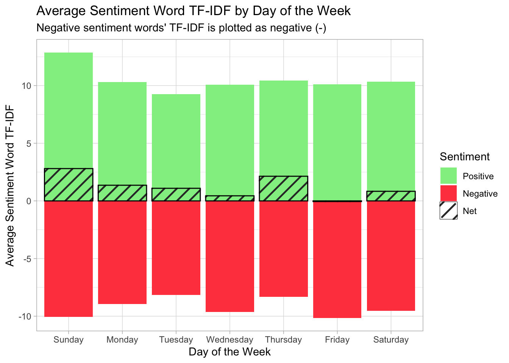
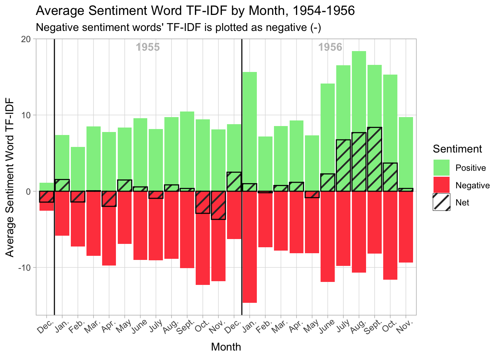
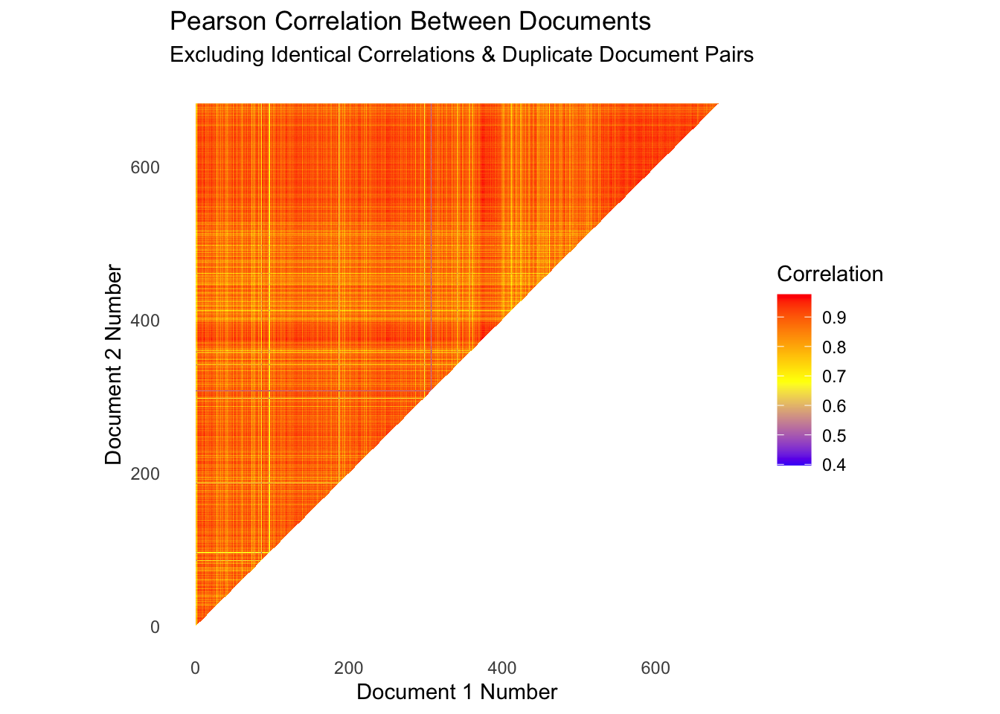
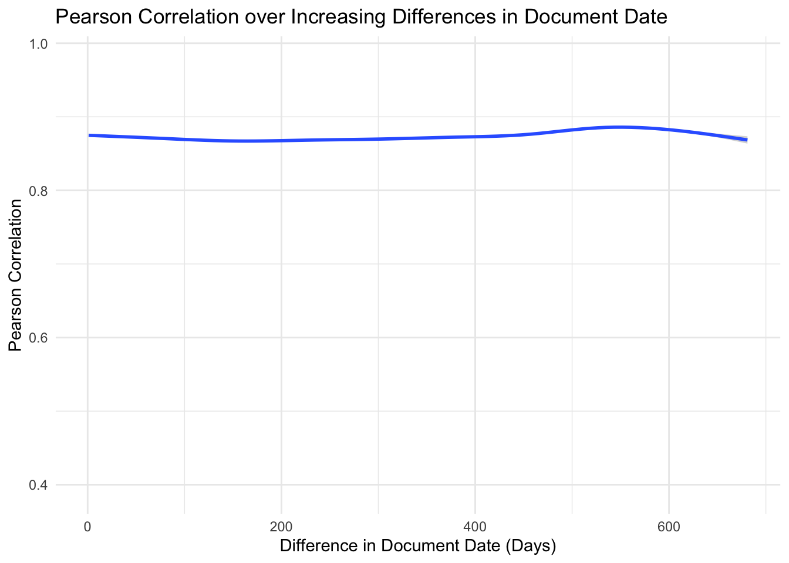
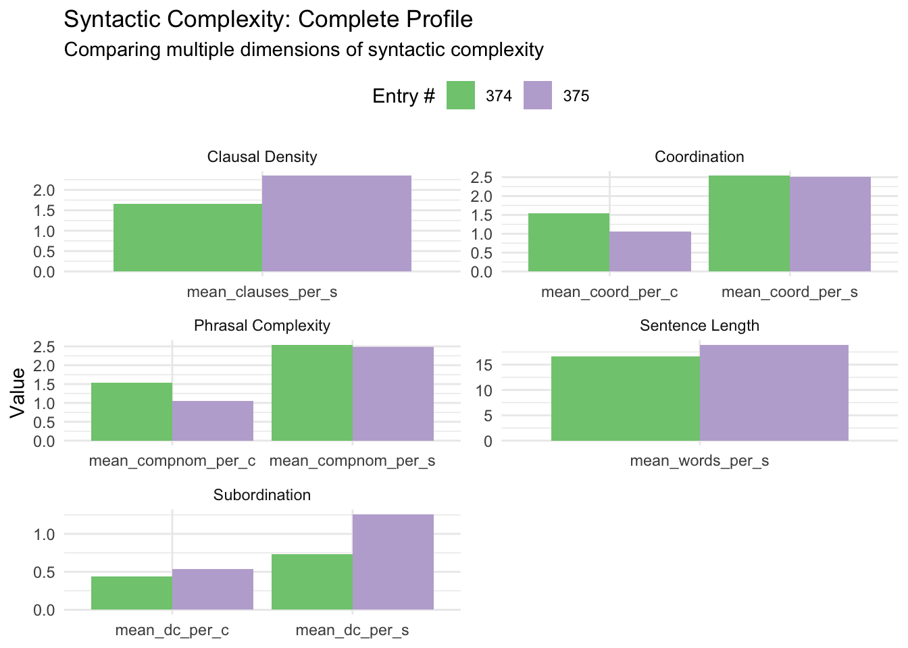

library(tidyverse)
library(tidytext)
library(scales)
library(rvest)
library(xml2)
library(quanteda)
library(quanteda.textstats)
library(ggpattern)
library(grid)
library(ggwordcloud)
library(udpipe)Text as Data: Data Exploration
Text as Data: Data Exploration
Clarke Campbell
October 14, 2026
Loading Packages
Loading and Formatting the Text
full_diaries <- read_html("ArmyDiariesCAW19551956.html")
# Removing chapter headings, subheadings, end-of-chapter map captions, and struck-through text
full_diaries |>
html_elements("span.c8.c24, span.c18.c8, span.c8.c30, span.c23, span.c6") |>
xml_remove()
# Splitting the diary by entry date (e.g., "Jan XX") - C14 is typical, C36 C30 where there is additional text in the entry date line, and C27 C9 in the green supplementary chapter (January 1956)
xml_add_sibling(html_elements(full_diaries, "span.c14, span.c36.c30, span.c27.c9"), "text", "||SPLIT_HERE||", .where = "before")
full_diary_texts <- full_diaries |>
html_text2()
broken_text_pieces <- str_split(full_diary_texts, "\\|\\|SPLIT_HERE\\|\\|")[[1]]
# Cleaning up any empty strings resulting from the splits
cleaned_entry_pieces <- broken_text_pieces[str_length(str_trim(broken_text_pieces)) > 0]
# Removing the diary document front matter (table of contents, contacts, etc.)
cleaned_entry_pieces <- cleaned_entry_pieces[-1]
# Removing the single duplicate entry header (Jan 1, 1956):
cleaned_entry_pieces <- cleaned_entry_pieces[-368]
# There are 682 documents in the corpus: one for each day from December 30, 1954 to November 10, 1956.# Combining into a tibble for tidytext workflows
diary_tibble_raw <- tibble(
text_id = seq_along(cleaned_entry_pieces),
text = cleaned_entry_pieces
)
# Separating the initial date information for each entry
diary_tibble_clean <- diary_tibble_raw |> # Separating the entire header
mutate(
date_header = str_extract(text, "^[^\\n\\r]+"),
text_body = str_remove(text, "^[^\\n\\r]+[\\n\\r]+")
) |>
select(!text) |> # Splitting the header into date and caption (including year)
separate_wider_regex(
cols = date_header,
patterns = c(date_header = ".{6}", caption = ".*"),
cols_remove = TRUE
) |>
mutate(
year = case_when( # Assigning the right year to all documents
text_id == 1 | text_id == 2 ~ "1954",
text_id > 2 & text_id < 368 ~ "1955",
text_id >= 368 ~ "1956"
),
full_date = ymd(paste(year, date_header)),
week_day = as.factor(weekdays(full_date)),
week_day = factor(week_day, levels = c("Sunday", "Monday", "Tuesday", "Wednesday", "Thursday", "Friday", "Saturday")),
month = month(full_date),
month2 = case_when(
year == 1954 ~ (month - 12),
year == 1955 ~ month,
year == 1956 ~ month + 12
)
)
diary_tibble_clean# A tibble: 682 × 9
text_id date_header caption text_body year full_date week_day month month2
<int> <chr> <chr> <chr> <chr> <date> <fct> <dbl> <dbl>
1 1 DEC 30 " 1954" "Had lun… 1954 1954-12-30 Thursday 12 0
2 2 DEC 31 "" " Spent … 1954 1954-12-31 Friday 12 0
3 3 JAN 01 " 1955" " Arrive… 1955 1955-01-01 Saturday 1 1
4 4 JAN 02 " (SUND… " Arrive… 1955 1955-01-02 Sunday 1 1
5 5 JAN 03 "" " The tr… 1955 1955-01-03 Monday 1 1
6 6 JAN 04 "" " Visite… 1955 1955-01-04 Tuesday 1 1
7 7 JAN 05 "" " Took a… 1955 1955-01-05 Wednesd… 1 1
8 8 JAN 06 "" " It rai… 1955 1955-01-06 Thursday 1 1
9 9 JAN 07 "" " I had … 1955 1955-01-07 Friday 1 1
10 10 JAN 08 "" " Checke… 1955 1955-01-08 Saturday 1 1
# ℹ 672 more rowsCalculating TF-IDF
# Creating a quanteda corpus from the tibble above
full_corpus <- corpus(diary_tibble_clean, text_field = "text_body")
# Tokenizing the quanteda corpus
diary_tokens_quanteda <- tokens(full_corpus)
# Determining which words I should re-compound before proceeding by searching for capitalized words next to each other
diary_tokens_quanteda <- tokens_replace(
diary_tokens_quanteda,
pattern = phrase("St . Louis"),
replacement = phrase("St Louis")
)
diary_tokens_quanteda <- tokens_compound(
diary_tokens_quanteda,
pattern = phrase(c("L. A"))
)
# Finding all capital tokens, preserving padding
capital_tokens <- tokens_select(
diary_tokens_quanteda,
pattern = "^[A-Z1-9]",
valuetype = "regex",
case_insensitive = FALSE,
padding = TRUE
)
capital_tokens_filtered <- tokens_select(
capital_tokens,
pattern = paste0(
"(?i)^(I|AM|A\\.M|PM|AT|AROUND|A|THE|ABOUT|AFTER|AN|ON|IN|FROM",
"MONDAY|TUESDAY|WEDNESDAY|THURSDAY|FRIDAY|WITH|WITHIN|",
"CONCERNING|BORROWED|CALLED|DISCUSSED|EVIEDENTALLY|INVITED|",
"MET|REVISITED|SAMPLED|SAW|TOOK|VISITED|APPROXIMATELY|",
"BASICALLY|MAINLY)$|^\\d+$"
),
valuetype = "regex",
selection = "remove",
padding = TRUE
)
capitalized_collocs_filtered <- textstat_collocations(
capital_tokens_filtered,
size = 2:6,
min_count = 1,
tolower = FALSE
)Warning in textstat_collocations.tokens(capital_tokens_filtered, size = 2:6, :
Computation for large collocations may take long timecapitalized_collocs_more_than_nested <- capitalized_collocs_filtered |>
filter(count > count_nested)
compound_patterns <- capitalized_collocs_more_than_nested |>
arrange(desc(length)) |>
pull(collocation) |>
phrase()
# Compounding the multi-word tokens in the tokenized corpus
diary_tokens_compounded <- tokens_compound(
diary_tokens_quanteda,
pattern = compound_patterns,
concatenator = " "
)
# Adding multi-word tokens that fail the auto filters above
diary_tokens_compounded <- tokens_compound(
diary_tokens_compounded,
pattern = phrase(c(
"Hew Ess A",
"Charles A Werner",
"Branch 600"
)),
concatenator = " "
)
diary_tokens_compounded <- tokens_compound(
diary_tokens_compounded,
pattern = list(c("Tail O", "\u2019", "the", "Cock")),
concatenator = " "
)
diary_tokens_compounded <- tokens_replace(
diary_tokens_compounded,
pattern = list(c("Dow L", ".", "A", ".")),
replacement = phrase("Dow L_A")
)
diary_tokens_compounded <- tokens_replace(
diary_tokens_compounded,
pattern = phrase(c("U.S", "L.A")),
replacement = phrase(c("U_S", "L_A"))
)
# Removing punctuation besides colons (which are largely used for times)
diary_tokens_compounded <- tokens_replace(
diary_tokens_compounded,
pattern = "[!\"“”#$%&()*+,\\-./;<=>?@\\[\\\\\\]^`{|}~]",
replacement = "",
valuetype = "regex"
)
# Re-compounding time tokens around their colons
diary_tokens_compounded <- tokens_compound(
diary_tokens_compounded,
pattern = phrase("^\\d+$ : ^\\d+$"),
valuetype = "regex",
concatenator = "")
# Lowercasing the tokens
diary_tokens_compounded <- tokens_tolower(diary_tokens_compounded)
# Removing stopwords for TF-IDF calculation; I have not identified any clear custom stopwords that also need removal yet.
diary_tokens_compounded_no_stops <- tokens_remove(diary_tokens_compounded, stopwords("en"))# Creating the DFM
diary_dfm_no_stops <- dfm(diary_tokens_compounded_no_stops)
# Viewing the top features of the DFM to determine their plausibility
topfeatures(diary_dfm_no_stops, 25) – one time went quite get much
24193 1033 680 574 564 562 550 533
day see good around many back people little
495 454 449 431 423 422 396 387
got work didn’t took afternoon 2 also go
384 362 353 342 323 315 314 314
evening
306 # Calculating TF-IDF
diary_dfm_tfidf_no_stops <- dfm_tfidf(diary_dfm_no_stops)
#Converting to a dataframe
diary_tfidf_no_stops_tibble <- diary_dfm_tfidf_no_stops |>
convert(to = "data.frame") |>
pivot_longer(cols = !doc_id, names_to = "word", values_to = "tf_idf") |>
mutate(doc_id = str_sub(doc_id, start = 5)) |>
mutate(doc_id = as.integer(doc_id))
# Displaying "Top 10" words by TF-IDF value for each entry
top10_tfidf_tibble <- diary_tfidf_no_stops_tibble |>
mutate(overall_rank = min_rank(desc(tf_idf))) |>
group_by(doc_id) |>
slice_max(tf_idf, n = 10, with_ties = FALSE) |>
arrange(doc_id) |>
ungroup()
print(top10_tfidf_tibble, n = 30)# A tibble: 6,820 × 4
doc_id word tf_idf overall_rank
<int> <chr> <dbl> <int>
1 1 kansas city 5.67 418
2 1 wabash 2.83 3575
3 1 salt lake city 2.53 10511
4 1 advice 2.06 21862
5 1 space 1.79 29222
6 1 carolyn 1.72 31816
7 1 morton 1.60 35555
8 1 minute 1.53 38345
9 1 mom 1.51 39011
10 1 obtain 1.47 40593
11 2 denver 2.83 3575
12 2 new years eve 2.83 3575
13 2 idle 2.53 10511
14 2 chatter 2.53 10511
15 2 removed 1.93 25201
16 2 quiet 1.69 32867
17 2 car 1.27 48501
18 2 club 1.24 49172
19 2 train 0.865 63604
20 2 reading 0.861 63689
21 3 mormon 8.50 87
22 3 temple square 2.83 3575
23 3 layman 2.83 3575
24 3 tabernacle 2.83 3575
25 3 sea gull monument 2.83 3575
26 3 capital building 2.83 3575
27 3 brigham young 2.83 3575
28 3 utah 2.83 3575
29 3 ese 2.83 3575
30 3 salt lake city 2.53 10511
# ℹ 6,790 more rows# Creating a word cloud of most common high TF-IDF words across documents
set.seed(42)
top10_tfidf_tibble |>
group_by(word) |>
count() |>
arrange(desc(n)) |> # Ensuring most common words are in the middle
filter(nchar(word) > 1) |> # Removing 1-character words
filter(n > 2) |> # Only plotting words that appear more than twice
ggplot(aes(label = word, size = n, color = word)) +
geom_text_wordcloud(use_richtext = FALSE, eccentricity = 1) +
theme_minimal() +
theme(legend.position = "none")
#ggsave("wordcloud.png", width = 5, height = 3)
# Counting 1-character words in Top 10 lists across documents
top10_tfidf_tibble |>
group_by(word) |>
count() |>
arrange(desc(n)) |> # Ensuring most common words are in the middle
filter(nchar(word) == 1) |>
ungroup() |>
reframe(total = sum(n))# A tibble: 1 × 1
total
<int>
1 52Interpretation:
• Do some documents share distinctive vocabulary?
Yes, many of the entries share distinctive vocabulary terms. The word cloud above illustrates the most common words shared across the top 10 words by TF-IDF of each entry (e.g., “Japanese,” “Korean,” “India,” etc.).
• Are distinctive terms topical, rhetorical, or technical?
Practically all of the distinctive words shared across the diary’s entries are nouns, many of which refer to the nationalities or places that my grandfather described (e.g., Japan, Korea, India, Okinawa, Istanbul, Israel, Hong Kong, Naha) or the types of technically-related objects and concepts he encountered in his work as an Army contract estimator (e.g., contract estimates, cars, buildings, facilities, contractors, etc.). I would be interested to combine a measure like this with syntactic parsers that might allow me to filter out nouns and focus only on any patterns of non-nouns’ TF-IDF-based distinctiveness in the future.
• Are there documents whose “distinctiveness” seems driven by noise or formatting rather than content?
Yes. The documents whose “distinctiveness” are most driven by noise or formatting are those which include special characters like underscores, which originally represented letters that I could not decipher in my transcription of the diaries; for example, 4 of the top 10 sentiment words by TF-IDF of text5 (January 3, 1955) include such underscores, likely inflating their “uniqueness” measured across the corpus, and there are 52 other instances of single-character “words” (mostly special characters) being reflected across the entries.
Investigating TF-IDF Sentiment Across Time
# Loading the Bing sentiment dictionary
bing <- get_sentiments("bing")
net_weekly <- diary_tfidf_no_stops_tibble |>
inner_join(bing, by = "word") |>
group_by(doc_id, sentiment) |>
summarize(sentiment_tf_idf = sum(tf_idf), .groups = "drop") |>
mutate(sentiment_tf_idf = if_else(sentiment == "positive", sentiment_tf_idf, -sentiment_tf_idf)) |>
group_by(doc_id) |>
summarize(net_tf_idf_sentiment = sum(sentiment_tf_idf), .groups = "drop") |>
inner_join(diary_tibble_clean, by = c("doc_id" = "text_id")) |>
group_by(week_day) |>
summarize(average_net_tf_idf_sentiment = mean(net_tf_idf_sentiment), .groups = "drop")
net_monthly <- diary_tfidf_no_stops_tibble |>
inner_join(bing, by = "word") |>
group_by(doc_id, sentiment) |>
summarize(sentiment_tf_idf = sum(tf_idf), .groups = "drop") |>
mutate(sentiment_tf_idf = if_else(sentiment == "positive", sentiment_tf_idf, -sentiment_tf_idf)) |>
group_by(doc_id) |>
summarize(net_tf_idf_sentiment = sum(sentiment_tf_idf), .groups = "drop") |>
inner_join(diary_tibble_clean, by = c("doc_id" = "text_id")) |>
group_by(month) |>
summarize(average_net_tf_idf_sentiment = mean(net_tf_idf_sentiment), .groups = "drop")
net_monthly2 <- diary_tfidf_no_stops_tibble |>
inner_join(bing, by = "word") |>
group_by(doc_id, sentiment) |>
summarize(sentiment_tf_idf = sum(tf_idf), .groups = "drop") |>
mutate(sentiment_tf_idf = if_else(sentiment == "positive", sentiment_tf_idf, -sentiment_tf_idf)) |>
group_by(doc_id) |>
summarize(net_tf_idf_sentiment = sum(sentiment_tf_idf), .groups = "drop") |>
inner_join(diary_tibble_clean, by = c("doc_id" = "text_id")) |>
group_by(month2) |>
summarize(average_net_tf_idf_sentiment = mean(net_tf_idf_sentiment), .groups = "drop")
total_weekly <- diary_tfidf_no_stops_tibble |>
inner_join(bing, by = "word") |>
group_by(doc_id, sentiment) |>
summarize(total_tf_idf = sum(tf_idf), .groups = "drop") |>
mutate(total_tf_idf = if_else(sentiment == "positive", total_tf_idf, -total_tf_idf)) |>
inner_join(diary_tibble_clean, by = c("doc_id" = "text_id")) |>
group_by(week_day, sentiment) |>
summarize(average_total_tf_idf_sentiment = mean(total_tf_idf), .groups = "drop")
total_monthly <- diary_tfidf_no_stops_tibble |>
inner_join(bing, by = "word") |>
group_by(doc_id, sentiment) |>
summarize(total_tf_idf = sum(tf_idf), .groups = "drop") |>
mutate(total_tf_idf = if_else(sentiment == "positive", total_tf_idf, -total_tf_idf)) |>
inner_join(diary_tibble_clean, by = c("doc_id" = "text_id")) |>
group_by(month, sentiment) |>
summarize(average_total_tf_idf_sentiment = mean(total_tf_idf), .groups = "drop")
total_monthly2 <- diary_tfidf_no_stops_tibble |>
inner_join(bing, by = "word") |>
group_by(doc_id, sentiment) |>
summarize(total_tf_idf = sum(tf_idf), .groups = "drop") |>
mutate(total_tf_idf = if_else(sentiment == "positive", total_tf_idf, -total_tf_idf)) |>
inner_join(diary_tibble_clean, by = c("doc_id" = "text_id")) |>
group_by(month2, sentiment) |>
summarize(average_total_tf_idf_sentiment = mean(total_tf_idf), .groups = "drop")# Stripe pattern for net overlay
ggplot() +
geom_col(data = total_weekly, aes(week_day, average_total_tf_idf_sentiment, fill = fct_rev(as.factor(sentiment)))) +
geom_col_pattern(data = net_weekly, aes(week_day, average_net_tf_idf_sentiment, fill = "net"), color = "black", pattern = "stripe", pattern_fill = "black", pattern_angle = 45, pattern_density = 0.08, pattern_spacing = 0.03) +
theme_light() +
labs(
title = "Average Sentiment Word TF-IDF by Day of the Week",
subtitle = "Negative sentiment words' TF-IDF is plotted as negative (-)",
x = "Day of the Week",
y = "Average Sentiment Word TF-IDF",
fill = "Sentiment",
) +
scale_fill_manual(
labels = c("Positive", "Negative", "Net"),
values = c("lightgreen", "#FF474C", "transparent")
)
#ggsave("tf_idf_by_week.png", width = 1356, height = 838, units = "px", dpi = 192)# TF-IDF sentiment over 24-month period
ggplot() +
geom_col(data = total_monthly2, aes(month2, average_total_tf_idf_sentiment, fill = fct_rev(as.factor(sentiment)))) +
geom_col_pattern(data = net_monthly2, aes(month2, average_net_tf_idf_sentiment, fill = "net"), color = "black", pattern = "stripe", pattern_fill = "black", pattern_angle = 45, pattern_density = 0.08, pattern_spacing = 0.03) +
geom_vline(xintercept = 12.5, color = "black") +
geom_vline(xintercept = 0.5, color = "black") +
theme_light() +
labs(
title = "Average Sentiment Word TF-IDF by Month, 1954-1956",
subtitle = "Negative sentiment words' TF-IDF is plotted as negative (-)",
x = "Month",
y = "Average Sentiment Word TF-IDF",
fill = "Sentiment",
) +
scale_fill_manual(
labels = c("Positive", "Negative", "Net"),
values = c("lightgreen", "#FF474C", "transparent")
) +
scale_x_continuous(
labels = c("Dec.", "Jan.", "Feb.", "Mar.", "Apr.", "May", "June", "July", "Aug.", "Sept.", "Oct.", "Nov.", "Dec.", "Jan.", "Feb.", "Mar.", "Apr.", "May", "June", "July", "Aug.", "Sept.", "Oct.", "Nov."),
breaks = c(0, 1, 2, 3, 4, 5, 6, 7, 8, 9, 10, 11, 12, 13, 14, 15, 16, 17, 18, 19, 20, 21, 22, 23),
expand = expansion(mult = c(0.01, 0.01))
) +
theme(
axis.text.x = element_text(angle = 40, hjust = .75),
panel.grid.minor = element_blank()
) +
annotate(
geom = "text",
x = 3.05,
y = Inf,
label = "1955",
hjust = -1.7,
vjust = 1.5,
color = "grey",
fontface = "bold"
) +
# annotate(
# geom = "text",
# x = 3.05,
# y = Inf,
# label = "'54",
# hjust = 3.43,
# vjust = 1.5,
# color = "grey",
# fontface = "bold"
# ) +
annotate(
geom = "text",
x = 3.05,
y = Inf,
label = "1956",
hjust = -9.2,
vjust = 1.5,
color = "grey",
fontface = "bold"
)
#ggsave("tf_idf_by_month.png", width = 1356, height = 838, units = "px", dpi = 192)Interpretation:
These supplementary graphs aggregate the TF-IDF score of negative and positive sentiment words across both the days of the week and the various months of my grandfather’s journeys, demonstrating both net and gross sentiment (with negative sentiment graphed as a “negative” TF-IDF score accordingly).
Among the days of the week, on average, it appears that Sundays were the days of the week for which my grandfather had the highest net positive TF-IDF-weighted sentiment, while Fridays on average had slightly net negative TF-IDF-weighted sentiment, with every other day falling somewhere in between with some degree of net positive TF-IDF-weighted sentiment.
Among the months of my grandfather’s journey, the transition point between his mandatory military service and his world travels at his discharge in May 1956 is extremely clear: the four months after that point are filled with very high net positive TF-IDF-weighted sentiment, unlike the relatively neutral (and often even net negative) TF-IDF-weighted sentiment expressed in prior months.
Calculating Pearson Correlation Between Documents
diary_document_corr <- textstat_simil(
dfm_trim(diary_dfm_no_stops, min_termfreq = 5),
method = "correlation",
margin = "documents")
# Making a long tibble from the DFM Pearson correlation excluding same-document pairs (e.g., the correlation between text45 and text45) and including only pairs where document1 has a lower document number than document2 to remove duplicates (e.g., keeping the document1 = text374 and document2 = text375 correlation and removing the document1 = text375 and document2 = text374 correlation, because they are identical)
diary_document_corr_tibble_long <- as_tibble(diary_document_corr) |>
arrange(desc(correlation)) |>
mutate(document1 = as.numeric(str_sub(document1, start = 5)),
document2 = as.numeric(str_sub(document2, start = 5)))
print(diary_document_corr_tibble_long, n = 10)# A tibble: 232,221 × 3
document1 document2 correlation
<dbl> <dbl> <dbl>
1 374 375 0.976
2 374 648 0.971
3 375 376 0.971
4 374 376 0.970
5 374 377 0.970
6 374 386 0.969
7 374 557 0.969
8 375 386 0.968
9 375 377 0.968
10 374 637 0.968
# ℹ 232,211 more rowsdiary_document_corr_tibble_long |>
head(2)# A tibble: 2 × 3
document1 document2 correlation
<dbl> <dbl> <dbl>
1 374 375 0.976
2 374 648 0.971diary_document_corr_tibble_long |>
tail(2)# A tibble: 2 × 3
document1 document2 correlation
<dbl> <dbl> <dbl>
1 187 307 0.415
2 86 307 0.397#The mean correlation between entries is 0.871, the median correlation between entries is 0.883, and the middle 50% of all entries have correlations ranging from 0.849 to 0.908.
mean(diary_document_corr_tibble_long$correlation)[1] 0.8715594quantile(diary_document_corr_tibble_long$correlation) 0% 25% 50% 75% 100%
0.3969486 0.8491960 0.8832032 0.9081537 0.9764734 # Creating a heat map for the Pearson correlations
diary_document_corr_tibble_long |>
ggplot(aes(x = document1, y = document2, fill = correlation)) +
geom_tile() +
coord_fixed() +
scale_fill_gradient2(
low = "blue",
high = "red",
mid = "yellow",
midpoint = 0.68
) +
labs(
title = "Pearson Correlation Between Documents",
subtitle = "Excluding Identical Correlations & Duplicate Document Pairs",
x = "Document 1 Number",
y = "Document 2 Number",
fill = "Correlation"
) +
theme_minimal() +
theme(
panel.grid = element_blank()
) 
#ggsave("heatmap_pearson.png")
# Modeling to determine whether a larger difference in days between entries is correlated with a smaller Pearson correlation between documents: Seems not to be the case, and in fact rather that documents with some of the highest date of writing differences (in the 500-600 day range) have slightly higher correlations on average.
diary_document_corr_tibble_long |>
mutate(daydiff = document2 - document1) |>
ggplot(aes(daydiff, correlation)) +
geom_smooth() +
labs(
title = "Pearson Correlation over Increasing Differences in Document Date",
y = "Pearson Correlation",
x = "Difference in Document Date (Days)"
) +
theme_minimal() +
scale_y_continuous(limits = c(0.39, 0.98)) # These are the min. and max. correlations`geom_smooth()` using method = 'gam' and formula = 'y ~ s(x, bs = "cs")'
Interpretation:
The two most similar document pairs are Text 374 (January 7, 1956) & Text 375 (January 8, 1956) with a Pearson correlation of 0.9764734 and Text 374 (January 7, 1956) & Text 648 (October 7, 1956) with a Pearson correlation of 0.9714377.
The two most different document pairs are Text 86 (March 25, 1955) & Text 307 (November 1, 1955) with a Pearson correlation of 0.3969486 and Text 187 (July 4, 1955) & Text 307 (November 1, 1955) with a Pearson correlation of 0.4154998.
What questions would you ask from this corpus after seeing the patterns of similarity/differences that you see here? Explain your answer.
The Pearson correlation is very high between almost every entry of the diary, which is not surprising, as there has been no indication that anyone but my (25- to 27-year-old) grandfather wrote them. I am slightly surprised at the consistency of the correlation being sustained across dates, as is illustrated by the correlation v. diffdate trend line above; I would have expected my grandfather’s vocabulary and structural choices to have evolved more with time, such that temporally separated entries would be less consistent with each other than roughly contemporaneous ones are.
One question that I would ask from the corpus after seeing the patterns above might be something that Professor Giugni and I discussed when I first proposed using these entries as separate documents: when my grandfather actually wrote each day’s entry. For example, if he mostly wrote entries in January 1956 (around Texts 374, 375, 376, 377, etc.) on the day they described, a handful of days afterwards, or in a large batch at once - one of which seems likely, because he wrote his January 1956 entries back to back in a separate journal that month which lacked explicit space for each day - that might help explain the high correlation between those days; on the other hand, highly correlated entries that are greatly separated in time might suggest that he filled in the earlier entry while writing the later entry (or did both at a third, different time). To this end, I am especially interested in further investigating the visible high-correlation band between texts ~370 and ~400, which seem relatively highly correlated with most other entries and roughly represent the month with the aforementioned abnormal separate-journal situation.
Furthermore, the heat map in particular shows what appear to be fairly consistent lines across the entry pairs, suggesting that, for example, an entry that is relatively lowly correlated with another entry is likely to have a similar relatively low correlation with the other entries in the diary. I would guess that this is a natural byproduct of most entries being relatively highly correlated with each other, but I would be curious to investigate some of the low-correlation entries in question to determine what makes them relatively unique. My best guess, from examining entries 86 and 187, is that it has to do with their length (both are relatively short), but I am not entirely sure.
Measuring Syntactic Complexity
# Getting the udpipe model for modern English
model_info <- udpipe_download_model(language = "english-ewt")
ud_model <- udpipe_load_model(model_info$file_model)# Annotating the two entries I care about for this example using udpipe; I am using entries 374 and 375 because the low-Pearson-correlation entries described above are short in length and thus appear atypical/possibly susceptible to low sentence counts across which these measures are averaged.
diary_374_375_anno <- diary_tibble_clean |>
filter(text_id == 375 | text_id == 374) |>
mutate(
anno = map2(text_body, text_id, ~ udpipe_annotate(ud_model, x = .x, doc_id = .y) |>
as.data.frame())
) |>
select(anno) |>
unnest(anno) |>
rename(document = doc_id) |>
select(
document,
paragraph_id,
sentence_id,
token_id,
token,
lemma,
upos,
feats,
head_token_id,
dep_rel
)
# Creating syntactic structures from the annotated tibble
diary_374_375_syntax <- diary_374_375_anno |>
mutate(
is_word = upos != "PUNCT",
is_clause = (upos %in% c("VERB", "AUX")) & str_detect(coalesce(feats, ""), "VerbForm=Fin"),
is_dep_clause = dep_rel %in% c(
"advcl",
"ccomp",
"xcomp",
"acl",
"acl:relcl"
),
is_coord = dep_rel %in% c("conj", "cc"),
is_complex_nominal = dep_rel %in% c(
"amod",
"nmod",
"compound",
"appos"
)
)
# Turning syntactic structures into syntactic complexity measures
# Creating counts of words, clauses, dependent clauses, coordinating conjunctions, and complex nominals per sentence
diary_374_375_sentence <- diary_374_375_syntax |>
group_by(document, sentence_id) |>
summarize(
words_per_s = sum(is_word),
clauses_per_s = sum(is_clause),
dep_clauses_per_s = sum(is_dep_clause),
coord_per_s = sum(is_coord),
complex_nom_per_s = sum(is_complex_nominal),
.groups = "drop"
)
# Finding the mean number of the desired complexity markers per sentence and/or clause
diary_374_375_complexity <- diary_374_375_sentence |>
group_by(document) |>
summarize(
mean_words_per_s = mean(words_per_s),
mean_clauses_per_s = mean(clauses_per_s),
mean_dc_per_c = (sum(dep_clauses_per_s) / sum(clauses_per_s)),
mean_dc_per_s = mean(dep_clauses_per_s),
mean_coord_per_c = (sum(coord_per_s) / sum(clauses_per_s)),
mean_coord_per_s = mean(coord_per_s),
mean_compnom_per_c = (sum(complex_nom_per_s) / sum(clauses_per_s)),
mean_compnom_per_s = mean(complex_nom_per_s)
)
print(diary_374_375_complexity)# A tibble: 2 × 9
document mean_words_per_s mean_clauses_per_s mean_dc_per_c mean_dc_per_s
<chr> <dbl> <dbl> <dbl> <dbl>
1 374 16.7 1.65 0.442 0.731
2 375 18.9 2.35 0.537 1.26
# ℹ 4 more variables: mean_coord_per_c <dbl>, mean_coord_per_s <dbl>,
# mean_compnom_per_c <dbl>, mean_compnom_per_s <dbl># Plotting syntactic complexity measures
diary_374_375_complexity |>
pivot_longer(cols = -document, names_to = "Measure", values_to = "Value") |>
mutate(Category = case_when(
Measure == "mean_words_per_s" ~ "Sentence Length",
Measure == "mean_clauses_per_s" ~ "Clausal Density",
Measure %in% c("mean_dc_per_c", "mean_dc_per_s") ~ "Subordination",
Measure %in% c("mean_coord_per_c", "mean_coord_per_s") ~ "Coordination",
Measure %in% c("mean_compnom_per_c", "mean_compnom_per_s") ~ "Phrasal Complexity"
)) |>
ggplot(aes(Measure, Value, fill = document)) +
geom_col(position = "dodge") +
facet_wrap(~Category, scales = "free", ncol = 2) +
labs(
title = "Syntactic Complexity: Complete Profile",
subtitle = "Comparing multiple dimensions of syntactic complexity",
x = NULL,
y = "Value",
fill = "Entry #"
) +
scale_fill_brewer(palette = "Accent") +
theme_minimal() +
theme(
legend.position = "top"
)
Interpretation:
• How do the two texts differ in syntactic complexity?
These two entries in the diary show broadly similar profiles: the only measure of complexity for which they differ by more than even a single unit being measured is in their average words per sentence (16.65 in Entry 374 versus 18.89 in Entry 375). Other small differences between the entries include Entry 375’s on average slightly higher clause per sentence (2.34 vs. 1.65) and dependent clause per sentence (1.26 vs. 0.73) counts and Entry 374’s on average slightly higher complex nominal per clause (1.53 vs. 1.06) and coordinating conjunction per clause (1.53 vs. 1.06).
For example, entry 375 has four sentences with higher clause counts than any sentence in Entry 374 (which has no sentences with more than 3 identified clauses):
8 clauses identified by
udpipe: “Near the docks are poor houses and equally destitute men walk, lie, bathe, sit, eat, and exist in the streets (I would venture that one sees 90-95% males on the streets, the women supposedly being at home)”5 clauses identified by
udpipe: “As it turned out, the Pass and Review was finished by the time I got there, but I did see the latter half which consisted of a presentation of medals to outstanding Calcutta policemen.”5 clauses identified by
udpipe: “I said that I disagreed, and felt Capitalism or Socialism would accomplish the same thing, and one would not lose his freedoms, such as speech, press, etc.”4 clauses identified by
udpipe: “He is not married – feels a woman would want to tie him down, and know always where he was going.”
These four sentences alone account for nearly half (~0.3 of 0.69) of the difference in the mean number of clauses per sentence that exists between the two entries. By comparison, here is one of the clausal densest phrases in Entry 374, with 3 clauses identified by udpipe:
- “Up at 4:45 AM, packed my belongings, ate breakfast, checked in with the Major, and boarded the bus for the airport.”
Examining these examples partly makes me question the accuracy of the way in which we are using udpipe results to determine what constitutes a clause; in the ‘8-clause’ sentence above, for example, I see no reason for which “bathe,” “sit,” and “exist” should be treated as separate clause markers but not “walk,” “lie,” or “eat.”
• Do these differences align with or complicate your earlier lexical findings?
These differences (or, really, the general lack thereof) align with my earlier lexical findings indicating strong similarity between these two entries. I don’t think that the slight variation in a few of the syntactic metrics I measured suggests anything that complicates my lexical findings.
• What kinds of rhetorical or stylistic practices might these syntactic patterns reflect?
While the syntactic complexity is very similar between the entries I examined here, it is still interesting to consider what small deviations between sentences across entries might entail. As the phrase above from Entry 374 suggests, for example, I think that many of the sentences with the highest clausal density might be ones in which my grandfather is briefly describing a sequence of multiple different actions he took, perhaps suggesting he lacked the time or desire to elaborate on each individual action in that sequence as he reflected upon them. Similarly, the fact that Entry 375 has a slightly higher concentration of dependent clauses might suggest that my grandfather was more deliberate and measured in his construction of each sentence in the entry, again pointing to the possibility that he had more time (whether granted by his external circumstances or simply by nature of his variable mental bandwidth) to produce a slightly more ‘composed’ entry than he did for the previous day.
Synthesis
My grandfather’s diary entries reflect a generally consistent lexicon across the two years of his travels, but the sentiment measures suggest a substantial change in emotional vocabulary, becoming more positive after his discharge from military service in May 1956. This change is apparent in the TF-IDF-weighted sentiment aggregation I completed in the first section of this exploration, while the high lexical consistency between entries is particularly illustrated by the heat map of Pearson correlations between documents; my analysis of syntactic complexity revealed similar uniformity, but that was expected given that the documents I chose for it were the most lexically similar. After conducting these preliminary comparisons of lexical similarity, syntactic complexity, and TF-IDF-weighted sentiment across entries, I hypothesize that changes in my grandfather’s emotional (and other thematic linguistic) expression throughout the diary may be more strongly associated with shifts in his life circumstances than with changes in his underlying writing style, which tentatively appears to be generally consistent. This hypothesis will be something I hope to explore further in my final project along with any other measurements of linguistic change over time that the Pearson correlation and (very limited) two-document syntactic complexity comparison I did in this exploration did not reveal.
Of course, the results from this data exploration only represent a snapshot of the trends in my grandfather’s diaristic writings, and there are many uncertainties that remain. For example, my decision to faithfully transcribe my grandfather’s spelling errors, treat each entry as the discrete unit of analysis, and “re-compound” neighboring capital word tokens each impact the calculation of TF-IDF values, Pearson correlations, and syntactic complexity; it is worth investigating whether and to what extent such impact affects my conclusions. Beyond transcription and preprocessing decisions, there are also important limitations inherent in the measures themselves. For example, I used a simple Bing dictionary combined with TF-IDF values to discuss positive and negative sentiment words, but true “net” sentiment might be better captured by dictionaries or other methods that capture sentiments’ intensity and not just their weighted frequency. Further, while Pearson correlations provides a useful measure of lexical similarity, they do not necessarily capture similarity in meaning, rhetorical purpose, or writing style; because the correlations were calculated using a DFM of word frequencies, two entries can be highly correlated even if they discuss entirely different subjects, as long as their distributions of word frequencies are similar, while entries discussing similar subjects may receive relatively low correlations if they differ in length, specific vocabulary, or relative term frequency. The high average correlations I observed across the diary may therefore more truly reflect the persistence of common vocabulary in daily life, diary conventions, or the effects of representing each entry as a vector of word frequencies. Moreover, because I removed stopwords and trimmed infrequent terms before calculating correlations, my results reflect similarity within a particular subset of the vocabulary rather than the entirety of the diary’s language.
Addressing these pitfalls to develop more robust conclusions will be a key priority of my final analysis. I also hope to expand my syntactic complexity analysis beyond two entries, validate the accuracy of the parser’s annotations, and compare alternative measures of lexical similarity and sentiment (especially length-independent ones like cosine similarity) to determine whether my initial findings hold under different methodological assumptions. Ultimately, I hope that combining these approaches will allow me to distinguish more confidently between changes in what my grandfather wrote about, changes in how he wrote, and changes in how he expressed his feelings about the world around him as I analyze his diaries.